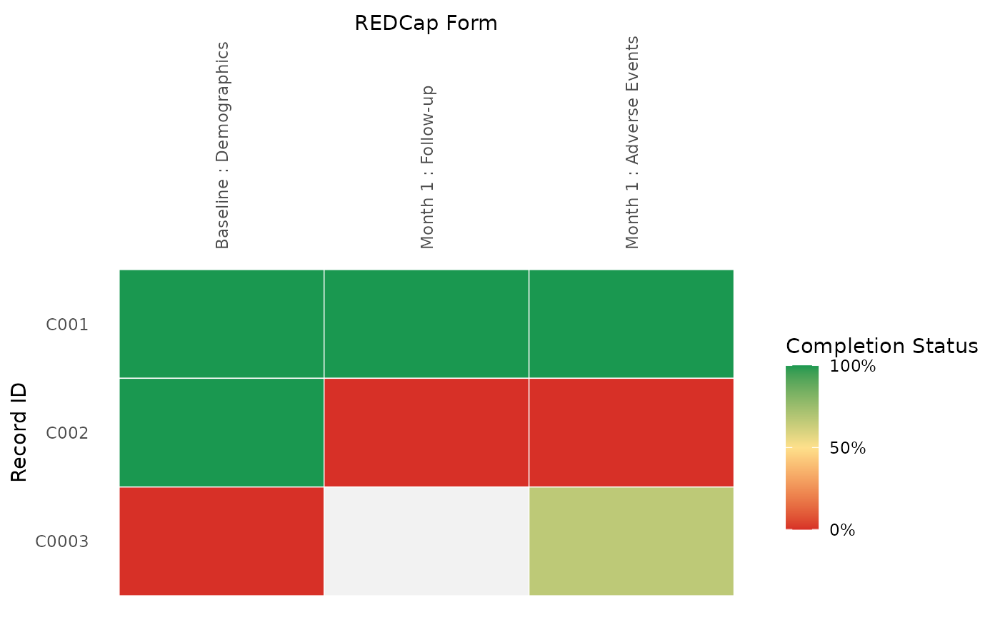
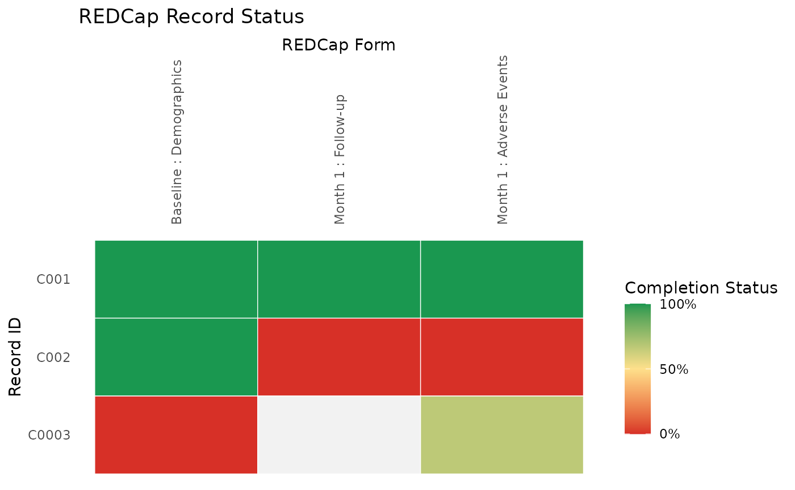

REDCapExploreR provides exploratory tools for REDCap projects accessed through the REDCap API. The package focuses on project structure, record status summaries, codebook review, and general data quality checks that help data managers inspect REDCap data in R.
Installation
Install the development version from GitHub:
devtools::install_github("CHOP-CGTInformatics/REDCapExploreR")Load the package after installation:
REDCap API credentials
Most REDCapExploreR workflows need a REDCap API endpoint and an API token with access to the project being reviewed. A common setup is to store these values in environment variables and read them at the start of the analysis:
redcap_uri <- Sys.getenv("REDCAP_URI")
token <- Sys.getenv("REDCAP_TOKEN")The examples below assume redcap_uri and
token have been set. Avoid storing API tokens directly in
scripts, vignettes, or version-controlled files.
Record Status Dashboard
Use get_record_status_data() to retrieve a
plotting-friendly table that summarizes REDCap form completion status by
record. Then pass the result to plot_record_status() to
create a ggplot heat map similar to the REDCap Record Status
Dashboard.
status_data <- get_record_status_data(
redcap_uri = redcap_uri,
token = token
)
plot_record_status(status_data)The package includes a small synthetic dataset for examples and
offline exploration. mock_record_status_data is generated
from mock_redcap_project using the same internal
record-status logic that supports
get_record_status_data().
mock_record_status_data
#> # A tibble: 9 × 4
#> record_id event_name form_name pct_complete
#> <fct> <chr> <fct> <dbl>
#> 1 C001 baseline_arm_1 Baseline : Demographics 1
#> 2 C001 month_1_arm_1 Month 1 : Follow-up 1
#> 3 C001 month_1_arm_1 Month 1 : Adverse Events 1
#> 4 C002 baseline_arm_1 Baseline : Demographics 1
#> 5 C002 month_1_arm_1 Month 1 : Follow-up 0
#> 6 C002 month_1_arm_1 Month 1 : Adverse Events 0
#> 7 C0003 baseline_arm_1 Baseline : Demographics 0
#> 8 C0003 month_1_arm_1 Month 1 : Follow-up NA
#> 9 C0003 month_1_arm_1 Month 1 : Adverse Events 0.667
plot_record_status(mock_record_status_data)
For larger projects, compact mode reduces x-axis text size, truncates long form labels, and uses lighter tile borders.
plot_record_status(mock_record_status_data, mode = "compact")
plot_record_status(
mock_record_status_data,
mode = "compact",
form_label_max = 20
)Because plot_record_status() returns a ggplot object,
you can add ggplot2 layers to customize labels and display settings.
plot_record_status(mock_record_status_data) +
ggplot2::labs(title = "REDCap Record Status")
Codebooks
Use build_codebook() to pull REDCap project metadata and
return a structured codebook with fields, choices, forms, events,
event-instrument mappings, repeating instrument settings, and
project-level summary metadata.
codebook <- build_codebook(
redcap_uri = redcap_uri,
token = token
)
codebook$fields
codebook$choices
codebook$formsUse mock_codebook to inspect the structure without API
credentials.
mock_codebook
#> <REDCap codebook>
#> Project: Mock REDCap Database
#> Forms: 3
#> Fields: 11
#> Events: 2
#> Repeating enabled: TRUE
head(mock_codebook$fields)
#> # A tibble: 6 × 19
#> field_order form_order form_name form_label field_name field_label field_type
#> <int> <int> <chr> <chr> <chr> <chr> <chr>
#> 1 1 1 demograph… Demograph… record_id Record ID text
#> 2 2 1 demograph… Demograph… age Age at enr… text
#> 3 3 1 demograph… Demograph… enrollmen… Enrollment… text
#> 4 4 1 demograph… Demograph… sex Sex radio
#> 5 5 2 follow_up Follow-up visit_date Visit date text
#> 6 6 2 follow_up Follow-up response_… Response s… text
#> # ℹ 12 more variables: descriptive_field <lgl>, required_field <lgl>,
#> # identifier <lgl>, choice_count <int>, choices <chr>, validation <chr>,
#> # branching_logic <chr>, event_count <int>, event_names <chr>,
#> # repeating_status <chr>, field_note <chr>, matrix_group_name <chr>
mock_codebook$project
#> # A tibble: 1 × 29
#> project_title project_id field_count form_count event_count repeating_enabled
#> <chr> <dbl> <int> <int> <int> <lgl>
#> 1 Mock REDCap D… 1001 11 3 2 TRUE
#> # ℹ 23 more variables: creation_time <lgl>, production_time <lgl>,
#> # in_production <lgl>, project_language <chr>, purpose <lgl>,
#> # purpose_other <lgl>, project_notes <lgl>, custom_record_label <lgl>,
#> # secondary_unique_field <lgl>, is_longitudinal <lgl>,
#> # has_repeating_instruments_or_events <lgl>, surveys_enabled <lgl>,
#> # scheduling_enabled <lgl>, record_autonumbering_enabled <lgl>,
#> # randomization_enabled <lgl>, ddp_enabled <lgl>, project_irb_number <lgl>, …Use view_codebook() to review the codebook as an
interactive HTML object with one table per available section.
viewer <- view_codebook(codebook)
viewer
htmltools::save_html(viewer, "codebook.html")Quality reports
Use build_quality_report() to retrieve project records
and metadata, run general data quality checks, and return findings,
summaries, and interpreted metadata.
report <- build_quality_report(
redcap_uri = redcap_uri,
token = token
)
report$findings
report$summaries$project
report$summaries$fieldsUse mock_quality_report to see the shape of the report
output and example findings.
mock_quality_report
#> <REDCap quality report>
#> Records: 3
#> Fields: 11
#> Findings: 8
mock_quality_report$findings |>
dplyr::select(
check,
issue,
severity,
record_id,
form_name,
field_name,
message
)
#> # A tibble: 8 × 7
#> check issue severity record_id form_name field_name message
#> <chr> <chr> <chr> <chr> <chr> <chr> <chr>
#> 1 metadata high_risk_free_te… info NA follow_up visit_not… Free-t…
#> 2 outliers outside_validatio… warning C002 demograp… age Field …
#> 3 outliers future_date info C002 demograp… enrollmen… Date f…
#> 4 operational incomplete_form_s… info C0003 demograp… demograph… Comple…
#> 5 operational incomplete_form_s… info C002 follow_up follow_up… Comple…
#> 6 operational incomplete_form_s… info C002 adverse_… adverse_e… Comple…
#> 7 operational incomplete_form_s… info C0003 adverse_… adverse_e… Comple…
#> 8 consistency checkbox_none_wit… warning C002 follow_up symptoms Checkb…
mock_quality_report$summaries$project
#> # A tibble: 1 × 8
#> record_count raw_row_count field_count form_count event_count
#> <int> <int> <int> <int> <int>
#> 1 3 10 11 3 2
#> # ℹ 3 more variables: repeating_enabled <lgl>, missing_rate <dbl>,
#> # finding_count <int>The report can be limited to selected check groups when a focused review is needed.
report <- build_quality_report(
redcap_uri = redcap_uri,
token = token,
checks = c("missingness", "metadata")
)Pulling project data
pull_redcap_project() retrieves the raw REDCap records
and project metadata used by the quality reporting workflow. This can be
useful when you need the same normalized API pull for custom
exploration.
project <- pull_redcap_project(
redcap_uri = redcap_uri,
token = token
)
names(project)The same top-level structure is represented by
mock_redcap_project.
names(mock_redcap_project)
#> [1] "data" "metadata" "events"
#> [4] "event_instruments" "instruments" "repeating_instruments"
#> [7] "project_info"
mock_redcap_project$metadata
#> # A tibble: 11 × 11
#> field_name form_name field_type field_label select_choices_or_ca…¹
#> <chr> <chr> <chr> <chr> <chr>
#> 1 record_id demographics text Record ID NA
#> 2 age demographics text Age at enro… NA
#> 3 enrollment_date demographics text Enrollment … NA
#> 4 sex demographics radio Sex 1, Female | 2, Male |…
#> 5 visit_date follow_up text Visit date NA
#> 6 response_score follow_up text Response sc… NA
#> 7 visit_notes follow_up notes Visit notes NA
#> 8 symptoms follow_up checkbox Symptoms none, None | fatigue,…
#> 9 ae_term adverse_events text Adverse eve… NA
#> 10 ae_grade adverse_events text Adverse eve… NA
#> 11 ae_related adverse_events radio Related to … 1, Yes | 0, No
#> # ℹ abbreviated name: ¹select_choices_or_calculations
#> # ℹ 6 more variables: text_validation_type_or_show_slider_number <chr>,
#> # text_validation_min <dbl>, text_validation_max <dbl>, required_field <chr>,
#> # branching_logic <chr>, identifier <chr>